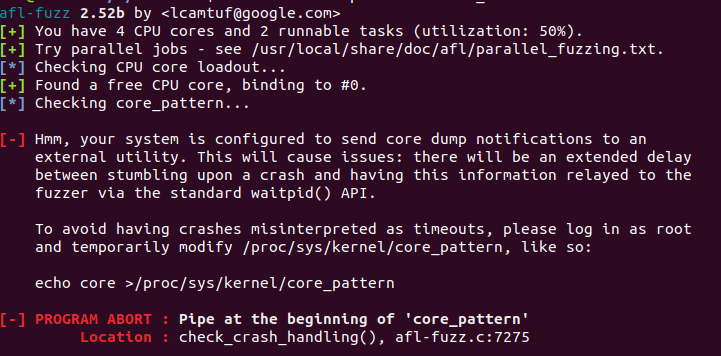

安装
环境
安装环境：（有点大，可以先换下源）
1 | $ sudo apt-get install clang-6.0 build-essential llvm-6.0-dev gnuplot-nox |
修改配置
1 | $ sudo update-alternatives --install /usr/bin/clang clang `which clang-6.0` 1 |
安装afl-fuzz
1 | $ wget http://lcamtuf.coredump.cx/afl/releases/afl-latest.tgz |
可以看到如下提示，afl即安装成功了。

使用
接下来我们用一个示例程序来演示afl-fuzz的使用。
有源代码的程序
首先我们先写一个简单的含有栈溢出漏洞的程序来实验一下：
1 |
|
然后我们用afl-gcc来编译该程序：
1 | $ afl-gcc -g -o afl_test test.c |
然后再在当前目录下创建一个input文件夹，并在里面创建一个文件（文件名也是任意），随便输入点东西：
接着再运行以下指令，就开始正式的fuzzing了（其中-i参数跟随的是输入文件夹，-o跟随的是输出文件夹）：
1 | $ afl-fuzz -i input -o out afl_test |
运行成功后，可以看到如下提示：
然后就会进入到fuzz的运行界面：
其中，overall results框中的cycles done表示运行的总周期数。随着不断fuzzing，周期数会不断增加，其数值的颜色也会由洋红色变成黄色、蓝色、绿色。因为afl-fuzz是一个无限循环运行的，而当cycles done对应数值的颜色变为绿色时，代表可执行内容已经很少了，此时即可用ctrl+c来手动终止fuzzing。
关于其他数值的含义，可以查看官方文档。
fuzzing终止后，我们就会在当前目录下得到一个out文件夹：
其中crashes文件夹下的文件即为产生程序crash对应的输入内容，可以用xxd来分析,从而获得漏洞点：
注：
如果运行afl时出现如下错误：

则需要登录root账户执行以下命令：
1 | # echo core >/proc/sys/kernel/core_pattern |
无源码程序
大部分情况下，我们都拿不到程序的源代码，这时候可以加上-Q参数，用qemu模式来运行afl。
我们需要先开启qemu模式：
首先安装下环境：
1 | $ sudo apt-get install libtool.bin |
进入原先的afl安装目录，运行如下命令：
1 | $ cd qemu_mode |
如果出现错误：
1 | util/memfd.c:40:12: error: static declaration of ‘memfd_create’ follows non-static declaration |
首先打开build_qemu_support.sh，将这一行注释掉：
1 | make || exit 1 |
然后运行如下命令：
1 | $ sudo apt-get install qemu |
就可以成功安装了。（注：这里每次启动shell都得重新添加一次环境变量，可以直接写入~/.bashrc文件末尾。）
然后还是原来的程序，这次我们用gcc编译：
1 | $ gcc test.c -o test |
然后使用如下命令开始fuzzing：
1 | $ afl-fuzz -i input -o out -Q ./test |
熟悉的界面：
参考链接
小白初学AFL：https://blog.csdn.net/weixin_39448417/article/details/99703723
afl-training：https://github.com/mykter/afl-training
初探AFL-Fuzz：https://xz.aliyun.com/t/4314#toc-8